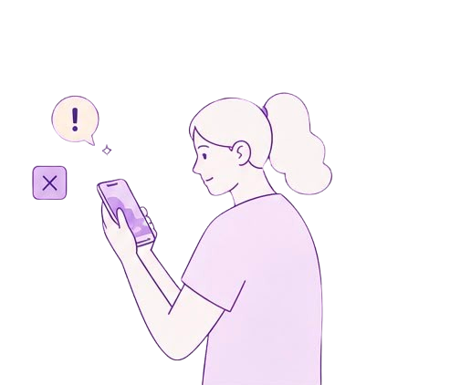

Assim como muitas fake news, este QR Code parecia inofensivo... até você escanear.
Antes de acreditar, verifique.
Informação é poder. Use com responsabilidade.

Fake News são informações falsas ou enganosas divulgadas como se fossem verdadeiras, com o objetivo de confundir, manipular opiniões ou causar algum tipo de benefício (político, financeiro, ideológico, etc).
Notícias
falsas
Imagens
fora de contexto
Vídeos
manipulados
Mensagens
enganosas
Tendemos a acreditar no que nossos amigos e grupos compartilham.
Queremos fazer parte de comunidades que pensam como nós.
As redes sociais mostram o que queremos ver, criando bolhas de informação.
Quanto mais vemos algo, mais parece verdade, mesmo que seja mentira.
Verifique a fonte da informação.
Confira a data e o contexto.
Pesquise em outros sites confiáveis.
Desconfie de títulos exagerados ou sensacionalistas.
Pense antes de compartilhar.
Não compartilhe o que você não checou.
Combater as fake news é responsabilidade de todos. Juntos, podemos construir uma internet mais consciente e segura.